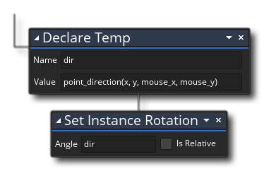
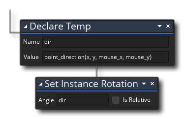

We are almost finished this tutorial, but there is one final thing we want to happen with our player instance... We need to make it rotate to always face the mouse while it is being moved around the screen. That way, the user can move with the keyboard and aim and shoot with the mouse. We'll leave the shooting for the next tutorial in the series and simply add the rotation for now.
For this, we are going to use another of the built-in variables that all objects have - the image_angle. This variable controls the angle of the sprite assigned to the instance, so setting it to anything other than 0 will rotate the sprite (and its associated collision mask) by the amount given. By default this is set to 0 for every instance in the room, but it can be changed at any time using the Set Instance Rotation action  .
.
But what are we going to set the rotation too? We actually need to use a function to get the angle that we want to set the sprite to, and then we'll store the value it returns in a variable ready to set the rotation of the instance.
In this case we are going to use a function to get the direction from the player instance to the mouse pointer and set the image_angle to that. So first of all, still in the "obj_player" Step Event we need to declare a local (temporary) variable and add our function to it. For that we drag the action Declare Temp  from the "Common" action library, and add the function like this:
from the "Common" action library, and add the function like this:
A local (temporary) variable is one that is only valid for the event that it is used in, so it's like a "use and throw away" variable - we only need to get the direction once in this step so there is no need to make it an instance or global variable. In this case we have named the variable "dir" and in future actions that will be what we use to refer to it. The function we will use is point_direction, which takes two positions within the room and returns the direction from the first position to the second in degrees from 0° to 360°. In this case we get the direction from the player position to the mouse position, which we get from the two global scope variables mouse_x and mouse_y (global scope variables are variables that do not "belong" to any instance, but instead belong to the whole game and as such all instances can change them and use them).
You can now add the Set Instance Rotation action  below (from the Instances action library), and set it to use the local variable "dir" to set the rotation of the image_angle:

below (from the Instances action library), and set it to use the local variable "dir" to set the rotation of the image_angle:

If you run the game one more time now, you should see that the player instance moves around and that it turns to follow the mouse: